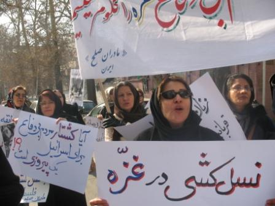
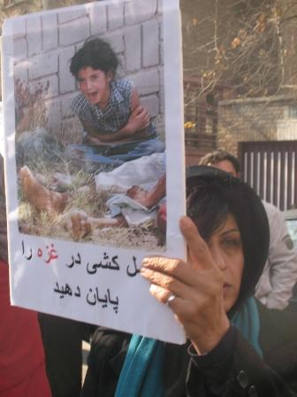
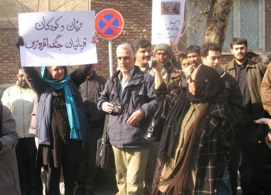
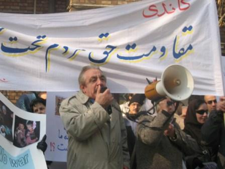
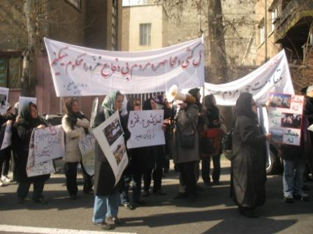
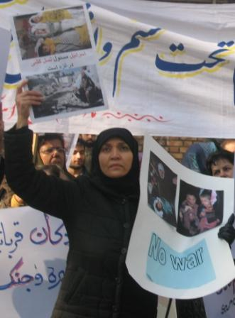

پذيرش > اخبار > ضرب و شتم مادران صلح در تجمع حمایت از مردم غزه : صلح طلبان کیستند؟

 ضرب و شتم مادران صلح در تجمع حمایت از مردم غزه : صلح طلبان کیستند؟ ضرب و شتم مادران صلح در تجمع حمایت از مردم غزه : صلح طلبان کیستند؟
22 دی 1387 - - نسخه قابل چاپ
تغییر برای برابری: تجمع مادران صلح در اعتراض به سیاست های جنگ طلبانه طرفین درگیر و حمایت از زنان و کودکان غزه با حضور نیروهای امنیتی به خشونت کشیده شد.
در این تجمع که ساعت 11صبح امروز 22 دی ماه 1387 در مقابل سفارت فلسطین برگزار شد، بیش از 100 نفر از فعالان اجتماعی و سیاسی، فعالان جنبش زنان و اعضای کمپین یک میلیون امضا در پی فراخوان مادران صلح با پلاکاردهایی در دست، خواستار پایان خشونت و توقف جنگ در غزه شدند.

در حالی که تجمع کنندگان با سردادن شعارهایی همچون "صلح، صلح، آتش بس" خواستار توقف کشتار مردم غزه بودند نیروهای لباس شخصی با سردادن شعارهایی همچون "مرگ بر صلح طلب " ، "مرگ بر ضد ولایت فقیه" و "مرگ بر منافق" به حاضرین در تجمع یورش برده و آنها را متفرق کردند. ماشین های گشت نیروی انتظامی بدون هیچ گونه مداخله ای در محل حاضر بودند و تنها نظاره گر توهین و فحاشی لباس شخصی ها و همچنین عکاسی و فیلمبرداری آنان از تجمع کنندگان بودند. طنز قضیه این ماجرای خشونت بار اینجاست که ده روز قبل همین عده یا امثال آنها به در منزل شیرین عبادی رفتند و اعتراض کردند که چرا نسبت به جریان غزه موضع نگرفته است درحالی که کانون مدافعان حقوق بشر قبلا بیانیه داده بود، و حال همان آدم هم اکنون شعار مرگ بر صلح طلب سر می دهند و به کسانی که به جریان غزه اعتراض دارند یورش می برند!باید پرسید صلح طلبان کیستند؟

در ادامه برخوردهای خشونت آمیز با تجمع کنندگان، پس از مدت کوتاهی تعدادی از این افراد با ضرب و شتم و فحاشی به راحله عسگری زاده، عضو کمپین یک میلیون امضا و عکاس، دوربین وی را شکسته و با خود بردند و در مقابل اعتراض وی که کارت شناسایی می خواست پاسخی ندادند. راحله عسگری زاده می گوید: من به منظور عکاسی از تجمع مادران صلح طلب رفته بودم. مشغول عکس گرفتن از تجمع کنندگان بودم که یک لباس شخصی که در حال شعار دادن بود و فریاد می زد: "مرگ بر سازشکار و صلح طلب "به طرفم حمله کرد تا دوربینم را بگیرد و هر چه من فریاد می زدم که کارتت را نشان بده توجهی نکرد و بعد که باقی ماموران لباس شخصی جلو آمدند و از او پرسیدند که از کدام پایگاه امده است و چرا می زند با خشونت بیشتری عمل کرد و همین طور که بند دوربین در دست من بود مرا می کشید تا این که برخی از تجمع کنندگان به کمک من آمدند که درنهایت دوربین را به زور از دست من درآورد و به من سیلی زد و دوستان او هم در کمک به او به ما حمله کردند. تا آنجا که یادم می آید آیدا سعادت از ناحیه کمر اسیب دید و به چشم های بهمن امویی نیز اسپری پاشیدند، خانم مقدم و احتسابیان نیز آسیب دیدند.
خدیجه مقدم، عضو گروه مادران صلح و کمیته مادران کمپین یک میلیون امضا در رابطه با تجمع امروز مادران صلح به تغییر برای برابری گفت: " تجمع با فراخوان مادران صلح در حمایت از زنان و کودکان و مردم غیرنظامی و بی دفاع غزه برگزار شد. این فراخوان روز گذشته به بسیاری از فعالان جامعه مدنی ارسال شد و با استقبال خوبی نیز مواجه شد. مادران صلح پیش تر نیز با صدور دو بیانیه و نامه ای که به آقای بان کی مون دبیر کل سازمان ملل متحد نوشتند خواستار برقراری آتش بس در این منطقه شدند. بیانیه دوم در محکومیت کشتار اسرائیل در غزه بود که متاسفانه این عملیات نظامی و غیر انسانی همچنان ادامه دارد. این جنگ به نظر ما کاملا نابرابر است و کودکان و مردم بی دفاع گناهی ندارند که در میان جنگ افروزان قرار گرفته اند. "

عضو مادران صلح ایران ادامه داد: " واقعیت ها را نمی شود نادیده گرفت و چون کشتار همچنان ادامه دارد ما بعد از نامه ای که به آقای بان کی مون نوشتیم فکر کردیم بهتر است تجمعی در مقابل سفارت فلسطین برگزار کنیم و خواستار آتش بس فوری و صلح در منطقه شده و صدای صلح طلبانه ی مردم ایران را به گوش آنان برسانیم. اما امروز در کمال تعجب و تاسف دیدیم که یک عده از ابتدای تجمع در مقابل سفارت حاضر شده و با شعارهای الله اکبر، خامنه ای رهبر نمی گذاشتند صدای ما به گوش مردم برسد. در عین حال ما سعی کردیم آرامش خود را حفظ کنیم و با برخورد مسالمت آمیز با آنها رو به رو بشویم. تعدادی از ما سعی کردیم با آنها وارد گفتگو شویم اما چشمانشان را بستند و بلند تر فریاد کشیدند و شعار مرگ بر صلح طلب سر داذند."

مقدم با اشاره به اینکه تعدادی از نیروهای امنیتی و بازجویان وزارت اطلاعات نیز در جمع لباس شخصی ها دیده می شدند، گفت:" من حتا بازجوی خودم را در بین آنها دیدم که از من عکس گرفت و گفت خانم مقدم می خواهید عکس تان را برایتان بفرستم."
به گفته وی با وجودی که در این تجمع هیچ شعار خشونت امیزی از سوی مادران صلح داده نشد و فقط برنامه ای بریا اعلام همبستگی با مردم غزه بود، لباس شخصی ها تعدادی از مادران صلح و سایر شرکت کنندگان در تجمع را مورد توهین و ضرب و شتم قرار دادند و نگذاشتند برنامه به پایان برسد و بیانیه آن خوانده شود.
خدیجه مقدم با اشاره به حضور چهره ها و شخصیت های سرشناس سیاسی در این تجمع گفت: "با شروع درگیری و برخورد فیزیکی من با خانم عبادی که در راه بودند تماس گرفتم و از ایشان خواستم که نیایند و همینطور از خانم بهبهانی که تازه به محل رسیده بودند درخواست کردم که محل را ترک کنند. درگیری های پراکنده شروع شد و لباس شخصی ها دوربین راحله عسگری زاده را از وی گرفتند و وقتی من برای مداخله جلو رفتم شخصی که بازجوی پیشین من بود لگد محکمی به پایم زد. این ماموران خانم صادقه شیردل از اعضای مادران صلح که به تازگی عمل جراحی کرده است و قفسه سینه اش هم مشکل دارد را از همین ناحیه مضروب کردند و همچنین آقای احمدی امویی و آیدا سعادت و فرخنده احتسابیان را نیز مورد ضرب و شتم قرار دادند".

وی ادامه داد: "قرار داشتیم بعد از تجمع به سازمان انتقال خون مراجعه کرده و اقدام به اهدای خون به زنان و کودکان غزه کنیم. به همین منظور با نامه ای از آنها درخواست استقرار کانتینر در مقابل سفارت فلسطین را داشتیم. بنا بر این با این که تجمع مسالمت آمیز ما را به خشونت کشیدند تعدادی از مادران صلح به سمت مرکز انتقال خون در خیابان وصال شیرازی رفتیم و طبق قرار قبلی خون خود را به زنان و کودکان بی گناه و مردم غزه اهدا کردیم" .
این عضو کمپین یک میلیون امضا اظهار داشت: "از برخوردی که با صلح طلبان می شود متاسف هستم و فکر می کنم کسی که در مقابل حمایت از مردم بی گناه فلسطین به ما توهین می کند و شعار مرگ بر صلح طلب سر می دهد به طور حتم خواستار ادامه جنگ در منطقه خشونت دیده غزه است و نه صلح. من از مادران صلح طلب و مدافع حقوق بشر اسرائیل و جامعه مدنی می خواهم که مصرانه خواستار اتمام جنگ شوند".

در بیانیه تجمع مادران صلح آمده است:" در روزهای آغاز سال نو مسیحی، هزاران انسان در قلب خاورمیانه در آتش خشونت های هولناک می سوزند. کودکان غزه که در اثر محاصره طولانی و طاقت فرسا رمقی در تن ندارند اکنون با این کشتار بی رحمانه قربانی می شوند. سیمای کنونی جهان در این گوشه از کره خاکی خونین و غمبار است".
در این بیانیه مادران صلح ایران از نیروهای فعال و آزادیخواه و همه مردم صلحدوست ایران و جهان خواسته اند با هر وسیله و امکان مدنی که در اختیار دارند اعتراض خود را نسبت به حملات اسرائیل در غزه اعلام کرده و خواهان پذیرش و رعایت قطعنامه های سازمان ملل متحد شوند.
مادران صلح در انتهای بیانیه خود تصریح کرده اند: "ما قاطعانه نسل کشی و هرگونه خشونت و جنگافروزی را محکوم کرده و با مردم بی دفاع این سرزمین ابراز همدردی و همبستگی میکنیم و از شما صلح طلب آزاده می خواهیم با ما همراه باشید".
اعضای مادران صلح، برگزاری تجمع را کتبا به فرمانداری تهران اطلاع داده بودند.
ارسال به
بالاترین
،
توییتر
،
فریندفید
،
فیسبوک
در همين بخش :
 پروین ذبیحی برنده جایزه حقوق بشری سازمان غيردولتى اتريشى سودويند شد پروین ذبیحی برنده جایزه حقوق بشری سازمان غيردولتى اتريشى سودويند شد
پخش کارت پستال و بروشور در روز جهانی زن در تهران
تمدید زمان برای امضای بیانیهی جمعی از فعالان زن به مناسبت هشت مارس
مجوزی که در نطفه خفه شد
بیش از 2000 امضا در اعتراض به تبعیض های آموزشی به مجلس تحویل داده شد
ديگر بخش ها :
طرح یک میلیون امضا
|
مقالات
|
سایت نوشته ها
|
اخبار
|
گزارش كمپين
|
گفت و گو
|
علیه سکوت
|
كوچه به كوچه
|
نامه های شما
|
گزارش ویژه
|
گفتگو با اعضا
|
ویژه سالگرد کمپین
|
تصویر برابری
|
دل آرام علی
|
تریبون
|
مقالات
|
تاریخ شفاهی
|
خارج از چارچوب
|
کتابخانه
|
درباره کمپین
|
کمپین در شهرها
|
کمپین در بند
|
صدای تغییر
|
ویژه 22 خرداد
|
لایحه حمایت از خانواده
|
گالری
|
عشا مومنی
|
امیر یعقوبعلی
|
خدیجه مقدم
|
راحله عسگری زاده و نسیم خسروی
|
پروین اردلان،جلوه جواهری، مریم حسین خواه، ناهید کشاورز
|
زینب پیغمبرزاده
|
سعیده امین، سارا ایمانیان، محبوبه حسین زاده، ناهید کشاورز و همایون نامی
|
احترام شادفر
|
نسیم سرابندی زاده،فاطمه دهدشتی
|
وبلاگ مهمان
|
پرونده خرم آباد
|
دستگیری ها
|
مریم مالک
|
پرستو اللهیاری
|
مهرنوش اعتمادی
|
سمیه رشیدی
|
Other Languages
|
همراهان
|
«فراخوان کمپین ده روز با بهاره هدایت»
| English
|